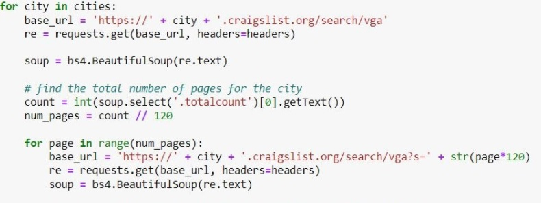
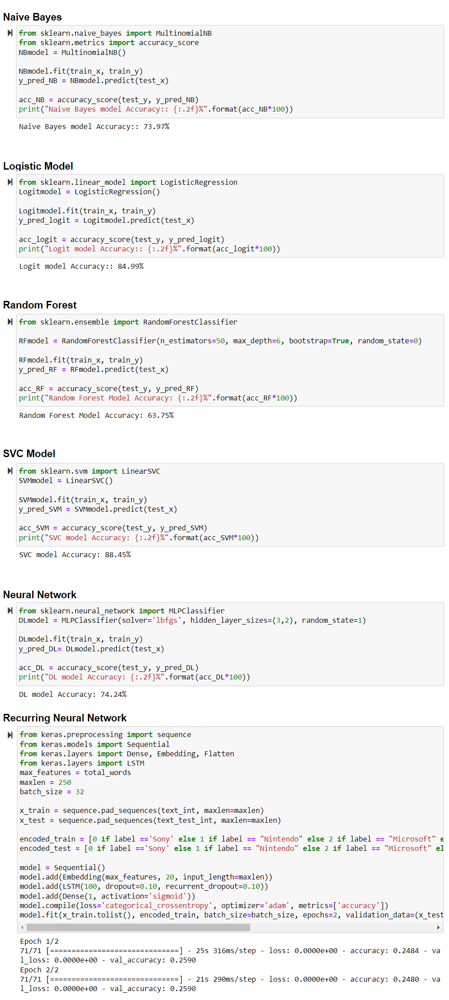

Python | Web Scraping, Text Representation, Classification, Model Selection
Craigslist is an online platform connecting buyers to sellers.
It facilitates the sale of many goods and generates revenue by charging a fee on select postings and through paid posting accounts.
Craigslist heavily depends on users returning to its website to increase engagement.
If engagement on its site goes up, Craigslist can charge paid posting accounts higher amounts.
Thus, it would be in their best interest to maximize the number of users on their website, or increase the amount of time
users spend on Craigslist. An effective way of improving users’ time on a page is by improving their experience.
That being said, in the video gaming category, there are several problems that needs improvement: general clutter,
inconsistent filtering results, and highly specific filtering options. This project is for enhancing user experience in the
video gaming section by solving the problems.
Beautiful soup package is used to scrap the data from the craiglist.

Six models are used to identify and classify the video game postings into different brand categories
─ Naive Bayes, Logistic Regression, Random Forest, Support Vector Classifier, Neural Network, and Recurring Neural Network
